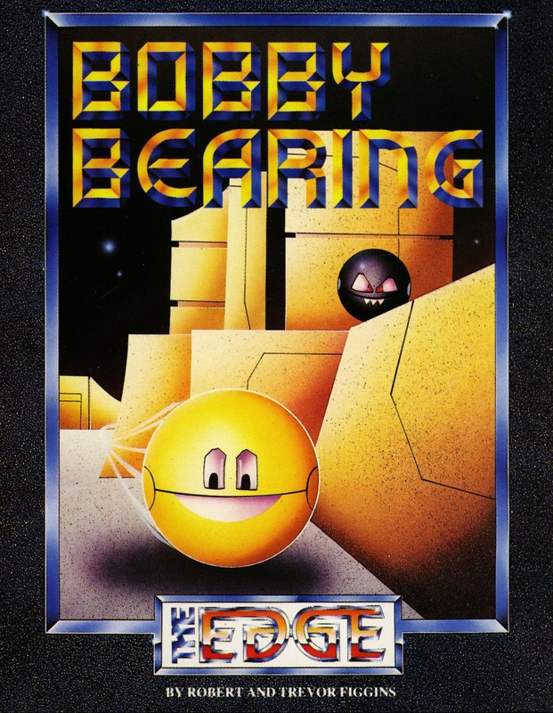
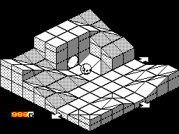
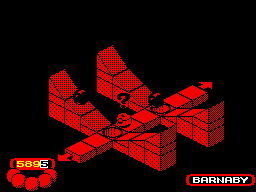

Bobby Bearing


{kind=link}

| Publisher: | The Edge |
| Price: | £7.95 |
| Year: | 1986 |
| Source: | CRASH, Issue 31 |

In the land of Technofear, mothers tell their baby Ball Bearings fearsome tales about the perilous Metaplanes. They say that unless they’re good little Bearings the monsters from the Metaplanes will come and get them in their sleep. Most young Bearings listen to this story with wide eyes and heed what their parents have told them, but occasionally the odd rebellious Bearing decides that he or she knows best and goes out to explore.
In all fairness, Bobby Bearing and his brothers were very obedient children until Cousin Nasty came to stay. He convinced the younger Bearing brothers that the Metaplanes were quite harmless and suggested a little sortie. However, the stories about the Metaplanes were not pure fiction and the Bearing brothers, together with their cousin, disappeared without trace. Being the eldest in the family Bobby must venture into the Metaplanes himself and try and rescue his relatives before it’s too late.

and inclines confronts the heroic Big
Brother of the Bearing family as he
continues on his quest to fetch Barnaby
safely home
The Metaplanes are inhabited by a race of mutant bearings — fearsome black spheres with huge teeth. Their idea of fun is to prey upon innocent bearings and do nasty things to them. Bobby soon discovers this for himself as he roams around the 3D maze that makes up the Metaplanes. The Black Bearings are very possessive about their property and get quite vicious. They jump out from dark corners and stun our hero into seeing stars.
Somewhere in the Metaplane, Bobby’s brothers lie in a state of unconsciousness. The heroic Bobby must locate his relatives and then push them along, back through the maze, and shove them through the tube that leads to their home. Not a simple task, as the maze is very large and it is very easy to get lost or wander into a screen from which there is no escape.
Bobby Bearing can roll around the maze following the arrows that show him the exits from the current section. Air blasting holes send master Bearing shooting up on a current of warm air — with careful timing they can be used as lifts to get the little smiling steel ball to previously inaccessible areas.
Each monochromatic screen contains a single section of the three dimensional maze, and as Bobby moves off an arrowed edge of one screen, the next section of maze flips into view. Switches in the ground turn on magnets, trigger off nasties and activate blocks which may be used as lifts when Bobby passes over them.

well awkward screen. Those two evil
Black Bearings roll up and down the U
shaped slopes relentlessly and Bobby
has to time his move just right to avoid
getting into trouble
Apart from the evil Black Bearings, there are other dangers in the Metaplanes. Bobby really has to keep his wits about him. Slabs of concrete come smashing down to the ground and getting caught under a descending block has stunning results — literally. Bobby must also keep to the pathways in the maze — if he strays too close to the edge of a ramp on the screen he stands a reasonably good chance of falling off. When Bobby is stunned a little question mark appears above his head and his eyes roll in confused concussion.
At the bottom right hand side of the screen a little counter ticks down as the game progresses. Whenever Bobby falls off a ledge or gets squashed by a flying slab he is incapable of moving for a while and the clock counter speeds up, removing vital seconds from the time limit in which the missing bearings have to be rescued.
A window below the main play area reveals the name of the next member of the Bearing family who should be found and herded to safety. Naughty Cousin Nasty. Mummy Bearing is going to be well cross when she gets hold of him!
CRITICISM
“Though very derivative in its presentation — Spindizzy does seem to be a title destined to inspire a million clones — Bobby Bearing is a heap of fun to play. Its main appeal is the realistic reactions of the little steel ball as he’s guided around the Metaplanes. Bobby realistically rebounds off all manner of obstacles in a very convincing manner, even curved ones. As far as the game goes, it’s brill, though a little bit difficult at first. It’s very easy to get lost when you start out since some screens tend to repeat. After a while though, the old arcade adventuring instinct should take control and a fairly logical map forms within your mind. Bobby Bearing is a game I’d recommend to most people, especially those enthralled by Spindizzy. Though the format is similar, the challenge is different enough to stir up a fair bit of enthusiasm.”
“Fabulous! A surreal world in your Spectrum where its residents stick to the laws of gravity, inertia, curvature and all the rest, completely convincingly. Bobby has got to be one of the best computer characters yet — his animation is superb and his smiling gob is really endearing. The first noticeable thing about Bobby Bearing is the loader: it’s a sort of Fighting Warrior loader but a scrolling message moves along the bottom while loading — very professional. I found the presentation of the game very smart and pleasing. The graphics are neat and well detailed — especially the baddies. The sound leaves a bit to be desired with only a few spot effects. The best point about Bobby Bearing is the actual animation and movement of Bobby around the maze — all done very smoothly and accurately. ‘Curvispace 3D’ is the name The Edge have given to this new technique — well worth checking out.”
“Hooray it’s finally here! The torturous wait is over at long last and I think I can truthfully say that it was worth it. What a lovely game. The 3D playing area is very good, although I think that some of the screens tend to repeat a bit too often. It is quite easy to get lost if you aren’t too familiar with the whole area. Your character is also very good, moving around the place well. I was a little surprised to find that he couldn’t jump about or fall off the edges of sections of the maze — this gives the feeling that you are not in complete control all the time, but makes life easier. The sound is good, with some very nice effects in the game but no tune. I recommend this game to everyone, especially Marble Madness and Spindizzy freaks.”
COMMENTS
| Control keys: | Y-P up and right, H-ENTER down and left, alternate keys on bottom row up and left/down and right |
| Joystick: | Kempston, Cursor, Interface 2 |
| Keyboard play: | Responsive |
| Use of colour: | Monochromatic |
| Graphics: | Very neat details |
| Sound: | A few effects, but no tune |
| Skill levels: | One |
| Screens: | 150 |
| General rating: | A technically stunning game which is addictive and fun to play |
| Use of computer: | 94% |
| Graphics: | 94% |
| Playability: | 92% |
| Getting started: | 92% |
| Addictive qualities: | 93% |
| Value for money: | 91% |
| Overall: | 94% |